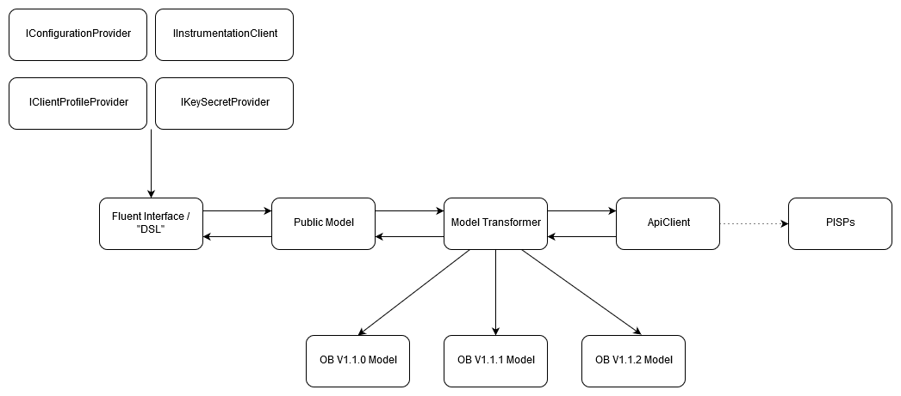

Classes

Interfaces
IConfigurationProvider
An interface for implementing runtime configuration.
IClientProfileProvider
An interface for implementing
IInstrumentationClient
An interface for implementing instrumentation concerns - tracing, logging, etc. Different platforms will have quite different requirements.
IKeySecretProvider
An interface for implementing a key secret provider. Implementations will implement platform concerns, e.g. Azure Key Vault.
Fluent Interfaces/DSL
TBD
Models
Public Model
Canonical data entities for clients
Model Transformations
OB V1.x
Auto-generated OpenBanking entities
Networking
ApiClient
Base class for HTTP requests
Last update: 2020-02-25